Từ thao tác thủ công đến vận hành chuẩn hóa
Một deck ngắn để show trên màn hình: tại sao bài toán này ra đời, workflow chạy như thế nào, và vì sao tự động hóa tạo ra lợi ích rõ ràng cho chi phí, chất lượng và tốc độ ra quyết định.
Vì sao bài toán này ra đời?
- Dữ liệu nằm rải rác ở Google Sheets, Excel, OneDrive và các workbook output khác nhau.
- Làm thủ công nghĩa là copy/paste, đối chiếu, sửa lại, rồi chờ người khác kiểm tra.
- Cách đó chậm, dễ lệch và rất khó scale khi khối lượng tăng.
- Automation ra đời để biến một quy trình rời rạc thành một quy trình có thể lặp lại và kiểm soát.
- Dữ liệu đầu vào có đúng và đủ không?
- Dữ liệu nào cần clean ở staging trước?
- Dòng nào cần người dùng duyệt?
- Kết quả cuối cùng có đáng tin để dùng không?
Người làm thủ công dễ sai ở đâu?
Copy nhưng lệch format
Khi copy từ Google Sheet, Excel hoặc workbook cũ, người làm dễ mang theo format, công thức, merged cell hoặc kiểu ngày tháng khác nhau. Lỗi này thường không thấy ngay, nhưng sẽ làm công thức downstream sai.
Không nhận ra dự án mới
Nếu tên dự án chưa có trong danh mục hoặc project master, người làm thủ công có thể vẫn copy tiếp mà không biết đây là dòng cần tạo mapping mới trước khi tính chi phí.
Không nhận ra nhân viên mới
MNV mới hoặc nhân viên chưa có mapping có thể đi xuyên qua nhiều sheet. Output vẫn có thể chạy, nhưng dòng đó sẽ thiếu mã hoặc rơi vào nhóm chưa xác định.
Sai ở bước phân loại
IT, Media và SX có logic khác nhau. Khi làm thủ công, người vận hành dễ nhầm dòng nào thuộc cost, dòng nào thuộc project, dòng nào cần loại khỏi vốn hóa.
Sửa thẳng output
Khi phát hiện lỗi muộn, cách xử lý thường là sửa trực tiếp trong file kết quả. Cách này nhanh trước mắt nhưng khó audit và dễ mất dấu nguyên nhân gốc.
Không biết lỗi lan đến đâu
Một thay đổi nhỏ ở source có thể chạm tới project master, SX staging, downstream và result sheet. Làm thủ công rất khó nhìn hết phạm vi tác động.
Checkpoint biến lỗi âm thầm thành danh sách cần xử lý
| Rủi ro khi làm thủ công | Checkpoint hỗ trợ thế nào | Tác dụng quản trị |
|---|---|---|
| Copy sai format hoặc sai cột | Đưa dữ liệu về staging/check sheet để nhìn lại dòng, tháng, MNV, project và trạng thái trước khi ghi output. | Giảm lỗi âm thầm do thao tác thủ công. |
| Dự án mới chưa có mapping | Đẩy vào IT_New_Project_Master trước; sau khi duyệt mới chạy Check_IT_Downstream và đưa vào 3.Vốn hóa. | Không để project mới đi thẳng vào báo cáo khi chưa có master. |
| Nhân viên mới / thiếu MNV | Checkpoint nghiệp vụ giúp thấy nhân viên chưa map, thiếu MNV hoặc tên nhân sự lệch giữa source và danh mục. | Giảm lỗi do dữ liệu nhân sự chưa được chuẩn hóa. |
| SX sai ở staging | checkpoint data SX và Check_SX_Downstream cho thấy lỗi nguồn và lỗi lan sang downstream trước khi gộp output. | Giữ nguyên tắc clean staging trước khi chốt output. |
Trước đây: phải mở nhiều sheet để tự đối chiếu
Các ảnh này được render trực tiếp từ workbook output mới nhất. Chúng minh họa các sheet người vận hành thường phải mở thủ công để kiểm tra: chi phí nhân sự IT, sheet vốn hóa và Data media.
Chi phí nhân sự IT
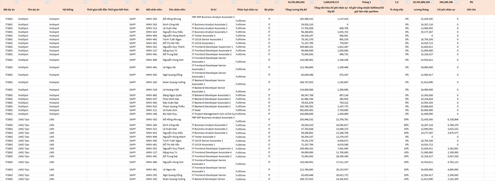
Người vận hành phải kiểm tra tỷ trọng, tháng, nhân sự và project trước khi biết dữ liệu có thể đi tiếp sang vốn hóa hay không.
3.Vốn hóa
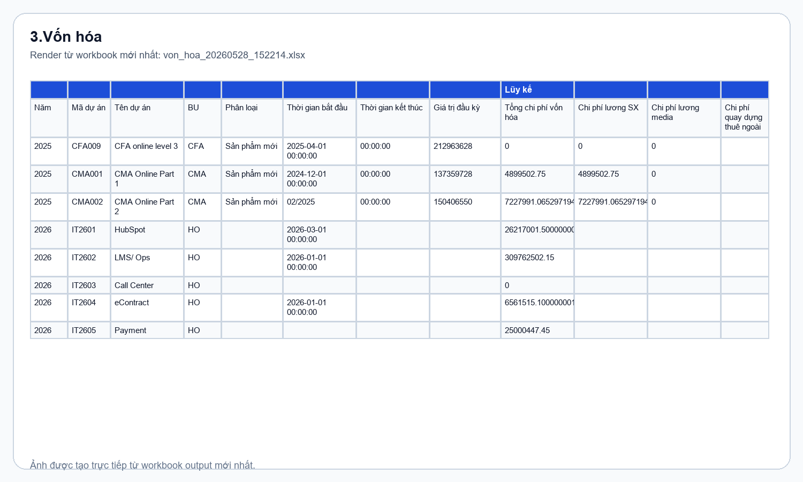
Đây là output quản trị quan trọng: dữ liệu chỉ nên vào đây sau khi source, mapping và checkpoint đã được kiểm soát.
Data media ACCA+CFA+CMA
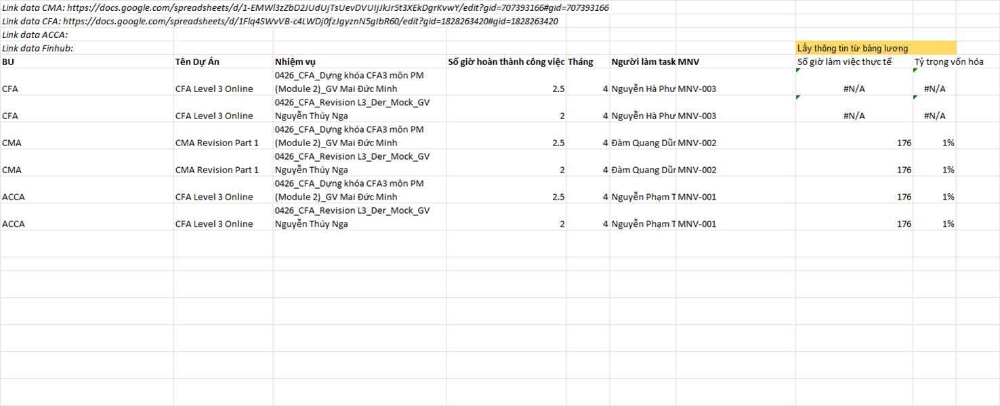
Data media cho thấy project, task, số giờ, tháng, người làm và MNV. Đây là ví dụ điển hình của dữ liệu cần chuẩn hóa trước khi tổng hợp.
Nguồn SX sau khi được đưa vào staging
Các ảnh này cũng được render từ workbook output mới nhất. Điểm quan trọng là SX phải được làm sạch ở staging trước khi đi vào Timesheet SX, chi phí nhân sự SX và vốn hóa.
Data SX ACCA+CMA
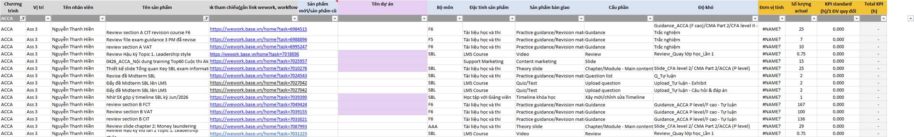
Đây là lớp staging sau khi dữ liệu SX được đưa về một cấu trúc chung để kiểm tra.
SX_Allocation_Build
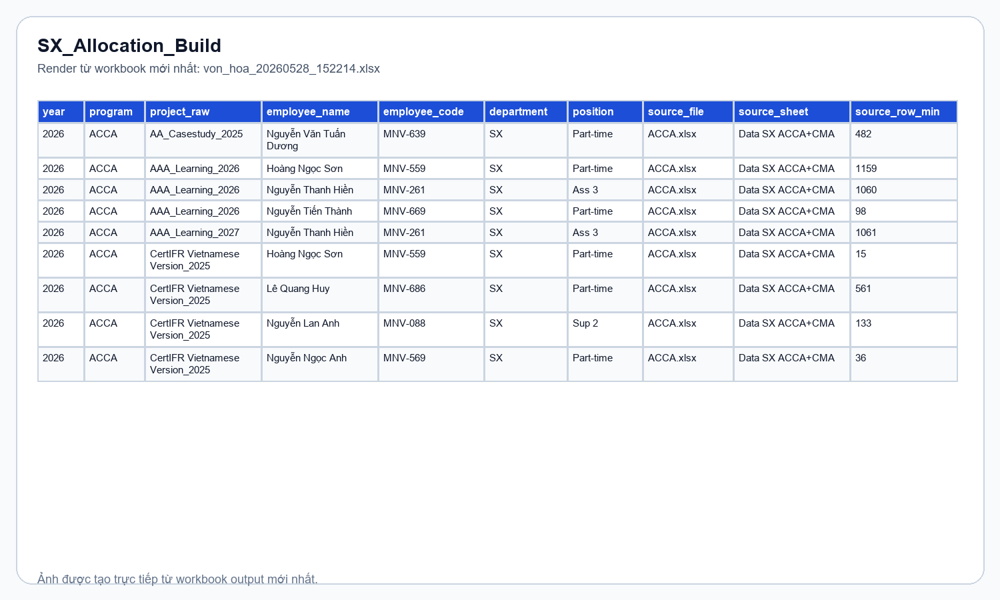
Sheet trung gian giúp chuẩn hóa allocation trước khi downstream chạy công thức.
Timesheet SX
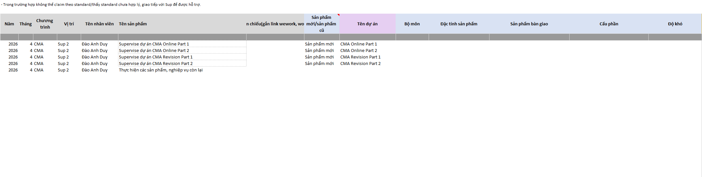
Timesheet SX là downstream sau staging; nếu staging sai thì phần chi phí và vốn hóa phía sau sẽ sai theo.
Trong quy trình mới: lỗi được đưa ra ánh sáng trước khi chốt
Hướng dẫn approval
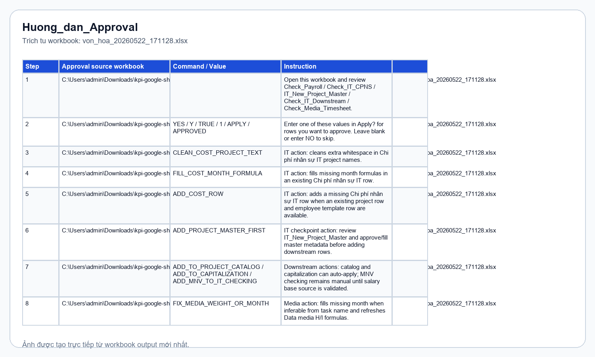
Người dùng biết cần mở sheet nào, duyệt dòng nào, và chạy lại automation bằng file approval nào.
Check_IT_CPNS
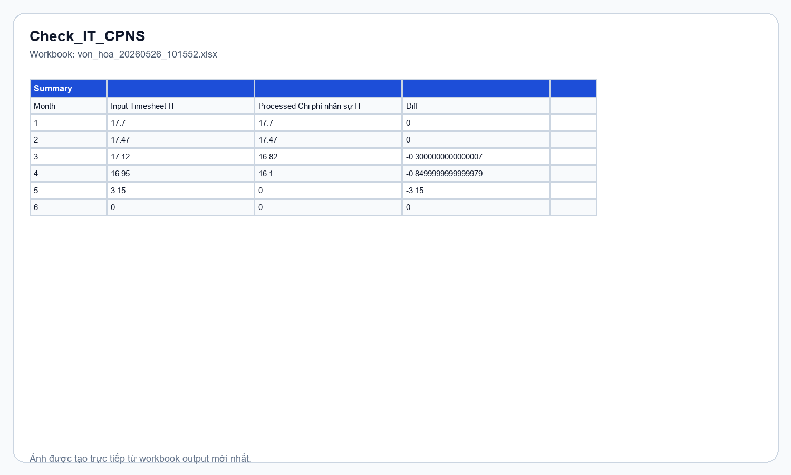
Checkpoint IT chỉ so chênh lệch giữa Timesheet IT và Chi phí nhân sự IT. Project mới và mapping mới đi sang IT_New_Project_Master.
Check_Media_Timesheet
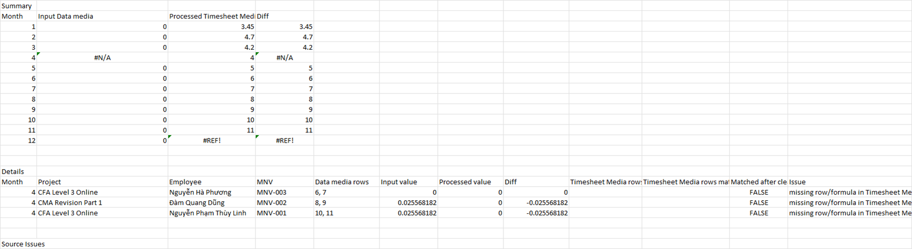
Checkpoint Media kiểm tra mapping giữa Timesheet Media và Data media trước khi đẩy vào result.
Video chạy thử: xử lý approval cho IT
Đoạn demo này dùng để trình chiếu nhanh cách người vận hành chạy automation, duyệt các issue IT và kiểm tra kết quả ở workbook output.
SX có lớp kiểm soát riêng trước khi ghi output
checkpoint data SX
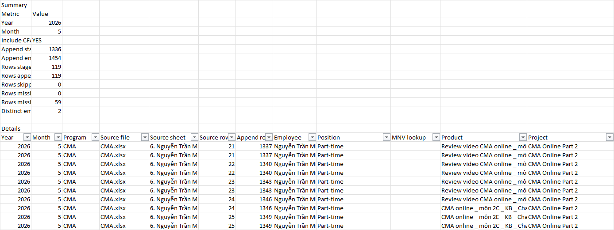
Đây là nơi nhìn lỗi nguồn SX trước: MNV thiếu, mapping lệch, hoặc dòng cần làm sạch.
Check_SX_Downstream
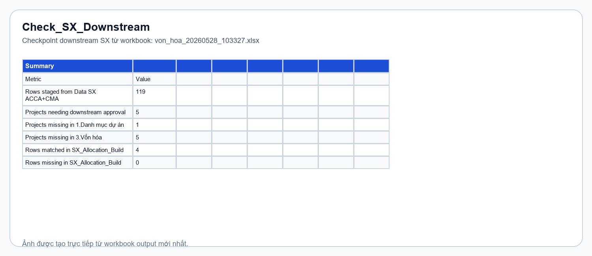
Kiểm tra tác động sang các sheet SX liên quan trước khi ghi output.
Sau khi áp dụng: output có result sheet để audit
IT_Approval_Result
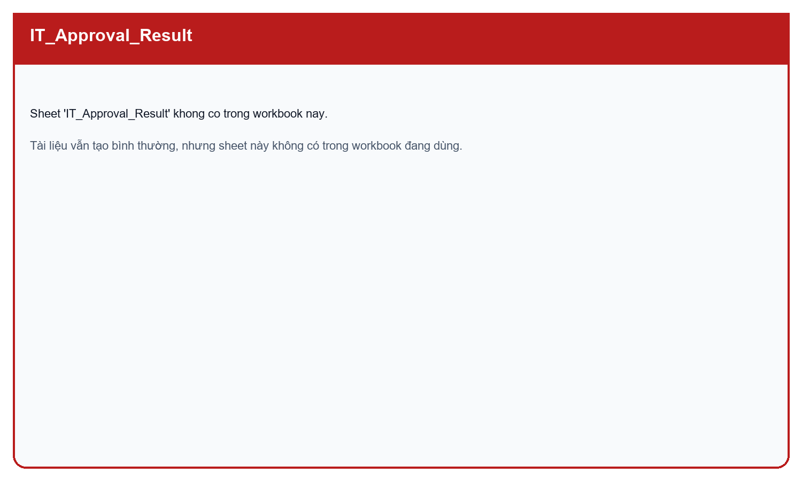
Ghi nhận kết quả duyệt của IT sau checkpoint.
Project_Master_Approval_Result
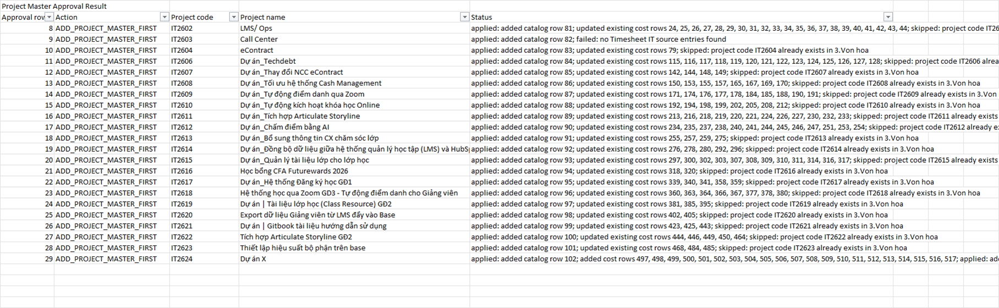
Ghi nhận project mới hoặc mapping project đã được duyệt.
Media_Approval_Result
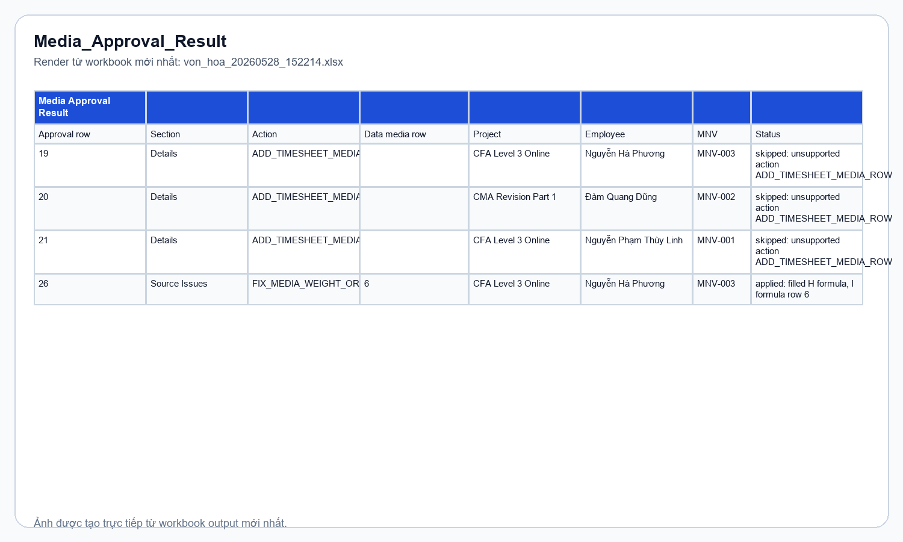
Ghi nhận các dòng Media được duyệt để đưa vào output.
Vì sao tự động hóa đáng làm?
| Lợi ích | Tác dụng thực tế |
|---|---|
| Tiết kiệm thời gian | Nếu làm thủ công theo quy trình hiện tại mất khoảng 8h với Associate hoặc 4h với Senior, tự động hóa giúp giảm lỗi thao tác thủ công và chuyển phần nặng sang kiểm tra / phê duyệt. Mỗi chu kỳ có thể giảm xuống khoảng 4h với Associate hoặc 2h với Senior có kinh nghiệm, đồng thời còn tiềm năng giảm sâu hơn khi checkpoint và approval được chuẩn hóa tiếp. |
| Giảm sai sót | Không còn phụ thuộc vào thao tác copy/paste, công thức thủ công hay sửa lẻ tẻ nhiều nơi. |
| Dễ audit | Có checkpoint, result sheet và log để truy ngược từng quyết định. |
| Dễ scale | Khi khối lượng tăng, hệ thống vẫn chạy theo cùng một logic thay vì tăng người thao tác thủ công. |
Clean staging trước, rồi mới gộp output
Với SX, vấn đề thường không nằm ở bước cuối mà nằm ở dữ liệu đầu vào: MNV thiếu, mapping lệch, hoặc downstream bị kéo sai. Vì vậy cách xử lý đúng là clean data ở staging trước, rồi mới gộp vào file output.
Code có checkpoint riêng cho checkpoint data SX và Check_SX_Downstream để nhìn rõ lỗi ở nguồn và lỗi lan sang SX_Allocation_Build, Timesheet SX, 4.1 Chi phí nhân sự SX và 3.Vốn hóa.
SX: clean staging trước khi gộp output
Checkpoint data SX
Đây là nơi nhìn lỗi nguồn SX trước: MNV thiếu, mapping lệch, dòng không đủ điều kiện hoặc dữ liệu cần làm sạch.
Check_SX_Downstream
Kiểm tra tác động sang SX_Allocation_Build, Timesheet SX, chi phí nhân sự SX và vốn hóa trước khi ghi output.
SX Approval Result
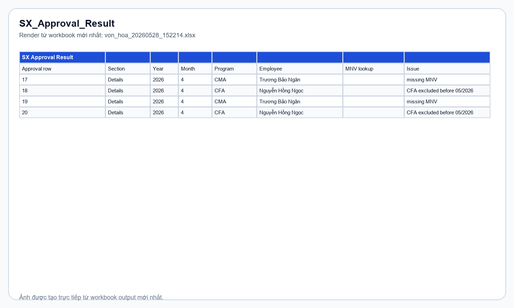
Sau khi duyệt, result sheet ghi nhận phần được đưa vào output. Đây là điểm giúp quy trình có thể audit lại.
IT, Media và những khó khăn thường gặp
IT
Dòng nào đã vào Timesheet IT, dòng nào sang Chi phí nhân sự IT, dòng nào cần tạo mới project master? Chốt bằng checkpoint để tránh sửa sai ở output.
Media
Dữ liệu đầu vào thường phải đối chiếu giữa Timesheet Media và Data media ACCA+CFA+CMA. Cần chắc rằng mapping dự án, tháng và người làm task là đúng.
Struggles
Khó nhất không phải code, mà là dữ liệu đầu vào không sạch, tên sheet thay đổi, nhân sự mới chưa map xong, hoặc project mới chưa có master đúng.
- Thường phải bổ sung ở 1.Danh mục dự án.
- Cập nhật IT_New_Project_Master nếu project chưa có trong catalog.
- Rà lại Check_IT_Downstream để bảo đảm project mới rơi đúng vào 1.Danh mục dự án và 3.Vốn hóa.
- Phải map ở Mã nhân viên.
- Nếu là người tham gia SX, phải bảo đảm mapping không làm hỏng checkpoint data SX và Check_SX_Downstream.
Thay đổi một đầu vào thì đụng bao nhiêu sheet?
| Tình huống | Sheet thường cần xem / chỉnh | Ghi chú |
|---|---|---|
| Dự án mới | IT_New_Project_Master, 1.Danh mục dự án, Check_IT_Downstream, 3.Vốn hóa | Check_IT_CPNS chỉ còn soi mismatch giữa Timesheet IT và Chi phí nhân sự IT. |
| Nhân viên mới | Mã nhân viên, Timesheet IT / Media / SX, checkpoint tương ứng | Nếu map chưa xong thì output vẫn chạy nhưng sẽ thiếu / sai dữ liệu. |
| SX phát sinh lỗi | checkpoint data SX, Check_SX_Downstream, SX_Allocation_Build, Timesheet SX, 4.1 Chi phí nhân sự SX, 3.Vốn hóa | Nguyên tắc: clean ở staging trước khi gộp output. |
Đích đến cuối cùng
Giảm thời gian thao tác thủ công, giảm lỗi khi copy/paste, giảm phụ thuộc vào một cá nhân, và tăng khả năng bàn giao.
Cho phép dùng checkpoint và approval để kiểm soát ngoại lệ thay vì sửa tay ở output cuối.
Đọc theo 4 bước: flow bài toán → câu hỏi cần tư duy → cách xử lý → đầu ra. Với SX, nhấn mạnh clean staging trước khi gộp output.
Workflow này biến một công việc nặng thao tác thủ công thành một quy trình có kiểm soát, có thể mở rộng và có thể audit.